マップとシーン
NPC ウェイポイント
NPC が歩くネットワーク。カットシーンで遠い目標へ歩くときや、追いかけたり逃げたりするときに使います。手で置くか自動で作り、確認します。
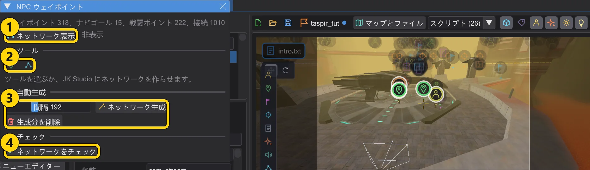
| 番号 | 名前 | 機能 |
|---|---|---|
| 1 | ネットワーク表示 | マップにネットワークを表示します。 |
| 2 | ウェイポイントを置く / 接続 | 床をクリックして点を置く / 2 つの点をつなぐ。 |
| 3 | ネットワーク生成 / 生成分を削除 | 歩ける床の上にネットワークを広げる / 作ったものを削除する。 |
| 4 | ネットワークをチェック | ゲームが受け付けない問題を見つけます。問題をクリックするとそこへ飛びます。 |
マップのツールバーの NPC ウェイポイント で開きます。ネットワーク表示 で経路を描きます。緑は手動(target)、青は自動(ナビゴールと戦闘ポイント)、オレンジはジャンプ(targetJump)。
- ウェイポイントを置く:床をクリックすると、新しい点が直前の点とつながります。Shift+クリックで新しい経路、Esc で終了。
- 接続:2 点をクリックで接続(Ctrl:ジャンプ)、接続済みの 2 点をクリックで切断。1 点の接続は最大 4 本です。
- ネットワーク生成 は歩ける床にウェイポイントを配置して接続します(間隔:オリジナルのレベルは約 230)。1 回で元に戻せます。生成分を削除 は自動で作ったものだけを削除し、手動のものは残ります。
- ネットワークをチェック はゲームが拒否するものや NPC が使えないものを見つけます。問題をクリックするとそこへ移動します。
削除・自動接続・複製#
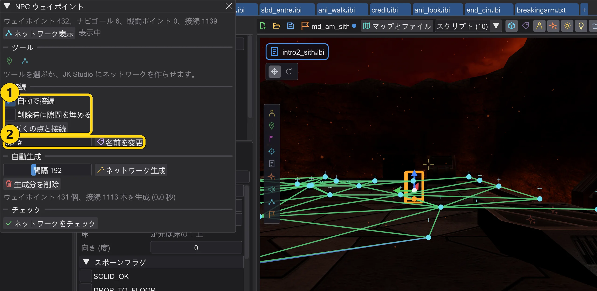
| 番号 | 名前 | 機能 |
|---|---|---|
| 1 | 自動で接続 / 削除時に隙間を埋める / 近くの点と接続 | ゲームと同じように接続します。自動で、削除時に、または選択に対して。 |
| 2 | 名前を変更 | 選択したウェイポイントをパターンで名前変更します。 |
- 削除(Delete、インスペクターのボタン、右クリックメニューの 削除)では、削除したウェイポイントを指していた
targetからtargetJumpもすべて同じ元に戻す 1 回で消えます。ほかのエンティティを指している場合は、先に確認します。削除時に隙間を埋める をオンにすると、削除したウェイポイントの隣どうしが、ゲームの辺チェックが許す範囲で接続されます。 - 自動で接続(既定でオン): 置いた・移動した・複製したウェイポイントは、間隔 の範囲内でゲームも接続するウェイポイントと接続します。ゲーム自身の辺チェック(NAV::TestEdge、Jedi Outcast では HardConnect)を使い、近いものから、1 点あたり
target欄は最大 4 つです。移動後は、ゲームが捨てる接続を削除します。すべて元に戻す 1 回です。近くの点と接続 は選択に対して同じことをします。ナビゴールと戦闘ポイントは対象外です。ゲームが自分で接続します。 - 複数のウェイポイントに 複製(Ctrl+D または右クリックメニュー): コピーは空いている名前を受け取り、コピーどうしの接続は保たれ、外への接続はそのままです。そのあと新しい近くの点と接続します。名前を変更 の横の欄で、選択したウェイポイントをパターンで名前変更します(
#は番号になります)。それらを指していたtargetもすべて追従します。 - ネットワーク生成 はマップにすでにあるウェイポイントからも始まります。生成で抜けた部屋に 1 つ置いてもう一度生成すると、その部屋にもネットワークができ、置いたウェイポイントにつながります。
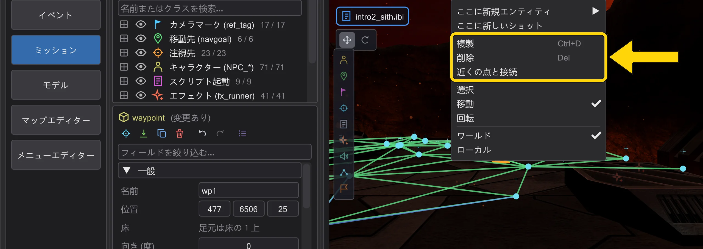
生成: 部屋・階段・ドア#
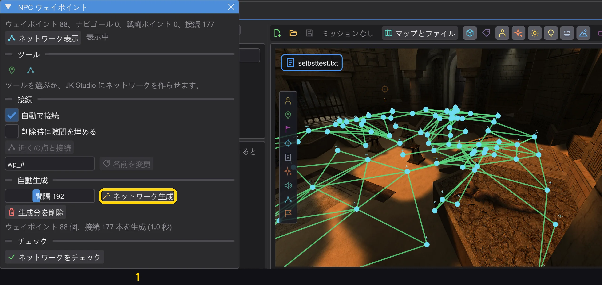
| 番号 | 名前 | 機能 |
|---|---|---|
| 1 | ネットワーク生成 | NPC が歩いて行けるすべての床にウェイポイントを置きます。 |
- ネットワーク生成 はゲームの NPC と同じように、プレイヤー開始位置・キャラクター・ナビゴール・マップ上のウェイポイントから歩きます。1 歩 15 ユニット(NPC が 1 フレームで走る距離)、上り下りの段差は最大 18(
STEPSIZE)、床の傾きはゲームが許す範囲まで(MIN_WALK_NORMAL)、当たり判定はゲームと同じです。クリップブラシは通れず、当たり判定のない装飾は通れます。こうして、キャラクターが歩いて入れる部屋には、狭いドアの先でもすべて届きます。 - 点は 間隔 のグリッド上、1 段より高く上る階段とスロープの上と下、そしてグリッドだと 1 間隔より大きな隙間ができる場所(ドアや小部屋)に置かれます。スロープの斜面にも点が置かれます。
- 接続が残るのは、キャラクターがその直線を歩けて、ゲーム自身の辺チェック(NAV::TestEdge、Jedi Outcast では HardConnect)が両方向で残す場合だけです。ドアは開いているものとして扱います。ゲームのネットワーク構築も、道をふさぐドアを開けて調べます。NPC が通れるかどうかは、ゲームと同じくプレイ中に決まります。
- ゲームが受け付けるウェイポイントは最大 1023 個です。グリッドがそれより多く必要なら、間隔が広がり(最大で 間隔 の 3 倍)、メッセージで知らせます。ジャンプでしか届かない屋根や出っ張りには歩きでは点が置かれません。そこを 開始点 でクリックしてください(下記)。
エリア・パス・開始点・ジャンプ辺#
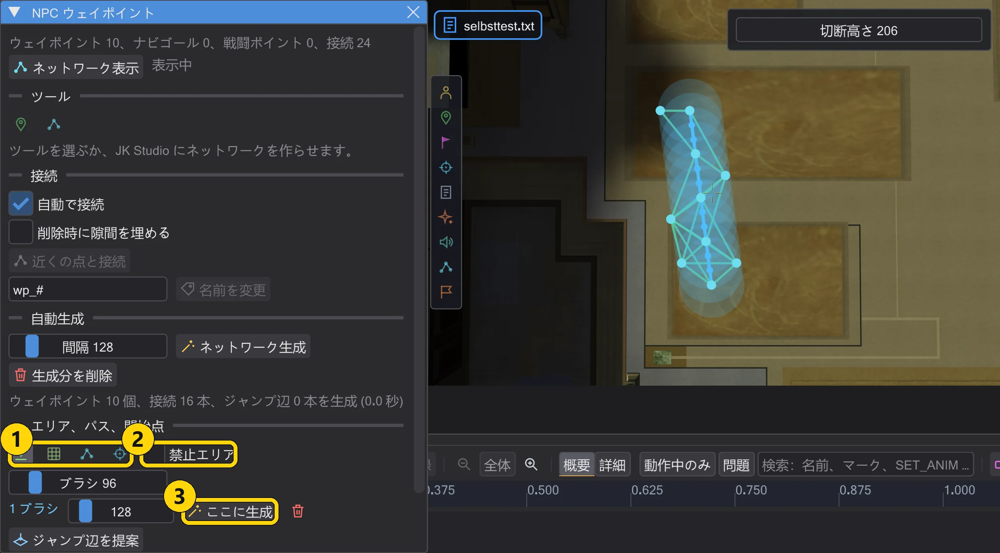
| 番号 | 名前 | 機能 |
|---|---|---|
| 1 | ブラシ 投げ縄 パス 開始点 | エリアを描く(ブラシ、投げ縄)、パスを引く、開始点をクリック。 |
| 2 | 禁止エリア | 次に描くエリアは禁止エリアになります。 |
| 3 | ここに生成 | このエリアだけに、エリア独自の間隔で生成します。 |
- ブラシ と 投げ縄 は、左ボタンを押したまま床に描きます(3D ビューでも上面図でも)。ここに生成 は NPC のようにエリアの中だけを歩き、まだない所にエリアの間隔でウェイポイントを置きます。それらは手で置いたときと同じく、ゲームの辺チェックで周囲のウェイポイントと接続します。元に戻すは 1 回です。エリアはマップごとに保存され(設定フォルダー内、.bsp には入りません)、次に開いたときに戻ります。
- 禁止エリア をオンにすると、次のエリアは禁止エリア(赤)になります。生成、パス、開始点はそこに決してウェイポイントを置きません。周りの点は、ゲームの辺チェックに通る所ではその上をまたいで接続します。
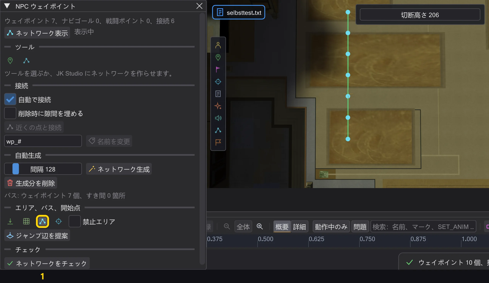
- パス: 床に線を引きます。線に沿って 間隔 ごとにウェイポイントが生成と同じように床に置かれ、ゲームの辺チェックが両方向で辺を残す所で隣どうしが接続されます。通らない所、またはゲームがウェイポイントを残さない所には赤い×が付き、メッセージが最初の場所を示します。パスは周囲のウェイポイントと接続します。元に戻すは 1 回です。
- 開始点: 生成が届かなかった床(屋根、張り出し、段差の先の部屋)をクリックします。そこから NPC のように歩き、ネットワークがまだ覆っていない床にウェイポイントを置いて接続します。キャラクターが歩いて行けるなら徒歩で、そうでなければジャンプ辺で(下記)。元に戻すは 1 回です。
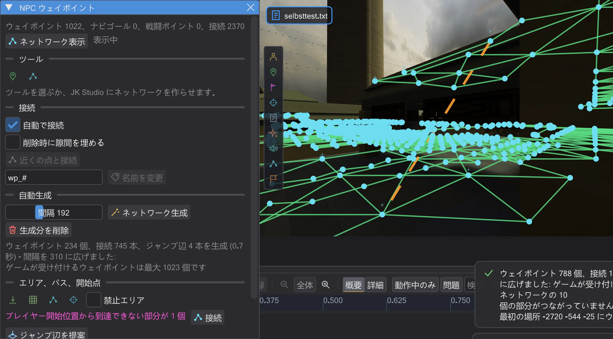
- ジャンプ辺は
targetJumpです。ゲームはこの辺でだけジャンプし、マップ読み込み時には調べず、跳べる NPC(フォースジャンプを持つか、自分で跳ぶクラス)だけに使わせます。ジャンプ辺を提案(開始点や 接続 の後にも行われます)は、ほかではつながっていないネットワークの部分の間にだけ、しかも NPC がゲームで実際に両方向へ跳べる所にだけ書きます。ゲームがジャンプ前に行うのと同じチェック(NPC_TryJump、NPC_Jump)です: 距離 750 まで、下へ 450 まで、目標の下に床があり、NPC の箱が通れる弧があること。各ウェイポイントにはtargetJump欄が 1 つあります。Jedi Outcast にはジャンプ辺がありません。 - プレイヤー開始位置からネットワークでたどり着けないウェイポイントは紫で描かれ、ウィンドウがその部分の数を数えます。接続 はそうした各部分からネットワークへ歩き(そこに開始点を置いたように、周囲 2 間隔の範囲で)、接続します。徒歩で、無理ならジャンプ辺で。
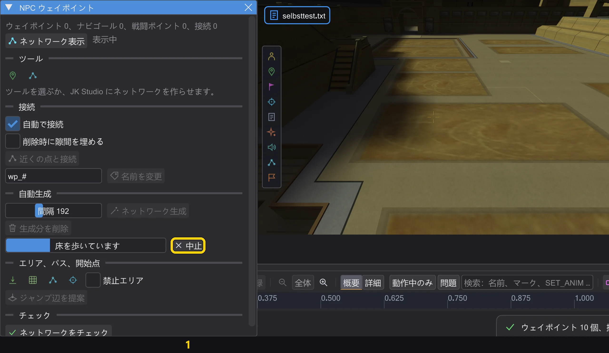
- 大きなマップでは生成に数秒かかります。生成はバックグラウンドで動きます。ウィンドウに進行状況と段階が表示され、その間も見回したりほかのウィンドウで作業したりできます。結果は最後に元に戻す 1 回分として入り、直接計算した場合と同じネットワークです。その間にエンティティが変わると、メッセージとともに結果を破棄します。中止 は止めて、何も変更しません。
戦闘ポイント・テストルート・カバー範囲#
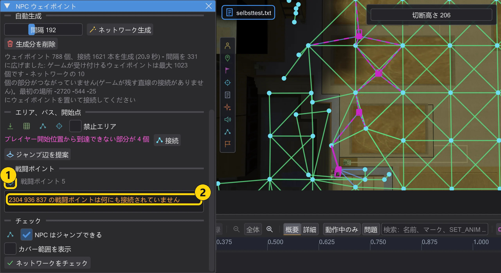
| 番号 | 名前 | 機能 |
|---|---|---|
| 1 | 戦闘ポイントを置く | 床をクリックで戦闘ポイント (point_combat) を置きます。 |
| 2 | 戦闘ポイント | 警告はゲームのメッセージとまったく同じです。クリックするとそこへ飛びます。 |
- 銃を持つ敵は、遮蔽やよい角度を求めて戦闘ポイントへ移動します。戦闘ポイントを置く はクリックごとに床へ 1 つ、ウェイポイントと同じく 25 上に置きます。何度もクリックすれば何個でも置けます。Delete、元に戻す、Ctrl+D はほかのエンティティと同じです。
- 戦闘ポイントに target は要りません。マップを読み込むと、ゲームはそれ自体をネットワークの点にし、同じ床の近くのウェイポイント最大 4 つと接続します(点線)。そのあと各戦闘ポイントに、見える中で一番近いネットワークの点を割り当てます - ふつうは戦闘ポイント自身です。ゲームが点にできない場合(周りの箱が壁に触れる)だけ、実線が代わりに割り当てられるウェイポイントへ伸びます。
- 赤: ゲームが "Combat Point at ... has no waypoint" を出します - それに合うネットワークの点がまったく見つかりません(接続のないマップや、すべてのウェイポイントよりずっと高い壁際など)。オレンジ: "not connected to anything" - 点にはなっていますが、同じ床に十分近いウェイポイントがありません。
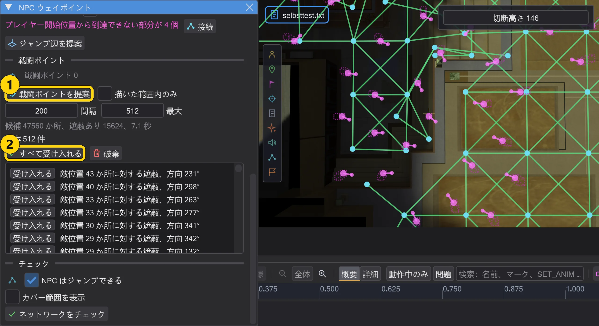
- 戦闘ポイントを提案 は、ゲームの射手が戦闘ポイントを選ぶのと同じ方法で探します。あなたを見失ったり、近づかれすぎたりしたストームトルーパーは、遮蔽と射線のある戦闘ポイントを求めます: ポイント自体からはあなたが見えてはならず (体も頭も)、立ったときのブラスターの銃口からは見えなければなりません - 遮蔽物の陰にかがみ、その上から撃ちます。候補はウェイポイント近くの歩ける床、敵の位置は視程 (1024) 内で 200 より遠い歩ける床です。最も多くの敵位置に対して遮蔽のあるポイントが先に来ます。受け入れるまで何も変わりません: 受け入れる で 1 つ、すべて受け入れる で全部を元に戻す 1 回分で。手で置いたものと同じく、ゲームが自分でウェイポイントにつなぎます。ゲームがつながない提案 ("has no waypoint") は外されます。
- 間隔 と 最大 で密度を決めます。既定値はルールセットのオリジナルマップから取っています: 次の戦闘ポイントまでの普通の距離 (Jedi Academy 231、Movie Duels 200、Jedi Outcast 145) と、そこでのウェイポイントあたりの戦闘ポイント数 (Jedi Academy 0.52、Movie Duels 1.0、Jedi Outcast 0.45) です。描いた範囲内のみ をオンにすると、描いた範囲内の床だけに提案が出ます。検索は進行バー付きでバックグラウンドで動き、中止 で止めても何も変わりません。Jedi Outcast では射手はポイント自体から確かめます: 体は隠れ、頭は見えること。
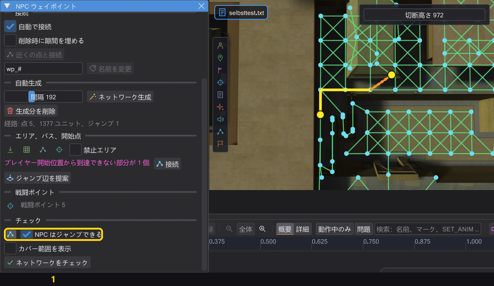
- テストルート: 床の 2 点をクリックします。エディターは、NPC がゲームで通る経路を表示します - ゲームが出発点に選ぶネットワークの点から目的地の点まで、ゲームが作るネットワークに沿って。NPC はジャンプできる をオンにすると NPC はジャンプ辺を使えます(フォースジャンプがある場合と同じ)。経路がなければ、ウィンドウが理由を示します。足りない接続がゲームで探す前にすぐ分かります。
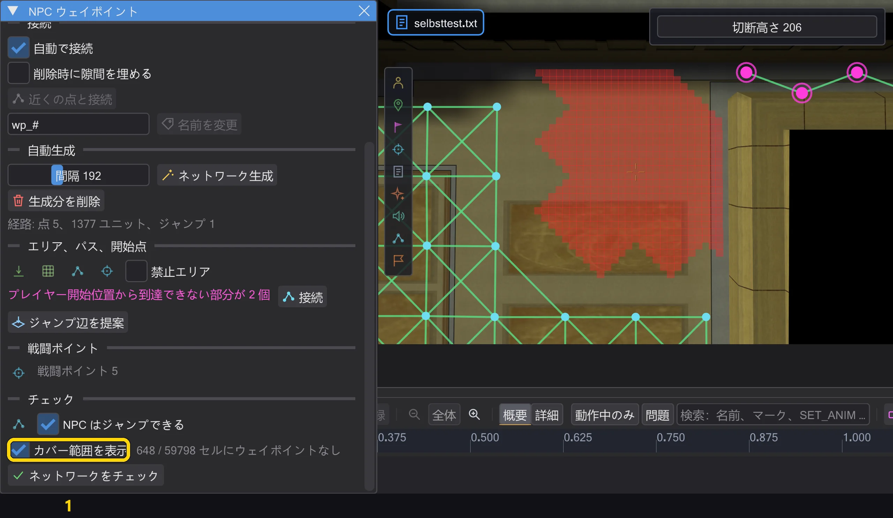
- カバー範囲を表示 は上面図に切り替え、歩いて 間隔 以内にウェイポイントへ届かない床の区画(32 x 32)をすべて赤く塗ります。歩き方は生成と同じで、プレイヤー開始位置・キャラクター・ウェイポイントから歩きます。これが生成やパスが抜かした場所です。計算はバックグラウンドで行われ、変更のたびにやり直されます。
- 有効な位置へ移動(既定でオン): ゲームが捨てる場所(ソリッド内、壁に近すぎる、浮いている)に手で置いたウェイポイントは、同じ床でゲームが残す一番近い位置へ、生成と同じ規則で移ります。ステータス行にどれだけどこへ動いたかが出ます。オフなら、ウェイポイントはクリックした所に残り、ステータス行が警告します。
カットシーンのプレビューは、ゲームとまったく同じようにこのネットワークを歩行に使います。遠い目標にはここに経路が必要で、なければキャラクターは立ち止まります(キャラクターの動き方 - ゲームと同じ)。ネットワークには最低 4 つのウェイポイントが必要です。ネットワーク上のドアは開いている間だけ通れます。閉じたドアは、NPC のために自動で開く場合だけ通れます。